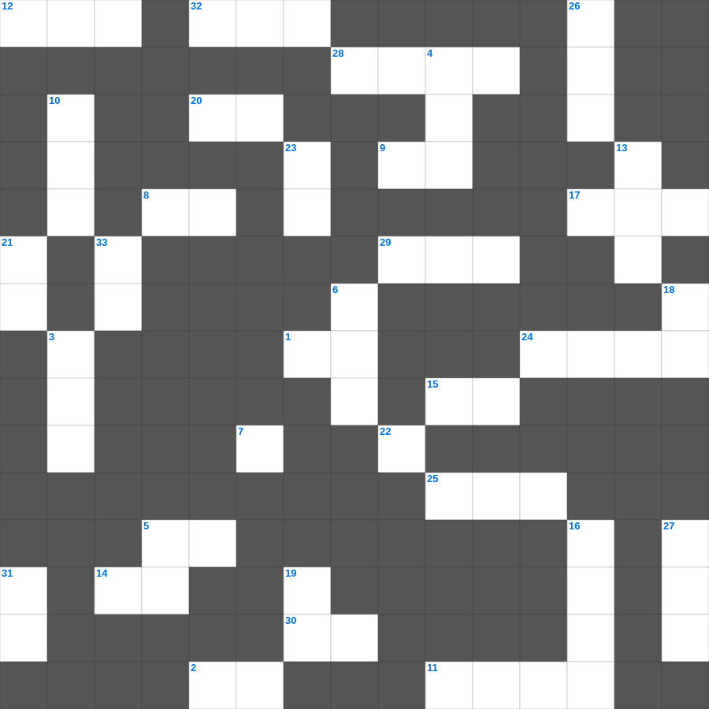

아모스: 정의를 강물같이
아모스의 말씀을 퀴즈로 배우는 아모스 주일학교 퀴즈입니다. 가로 힌트와 세로 힌트를 보고 35개의 단어를 맞춰보세요. 인쇄도 가능하고 정답 확인도 바로 되니 소그룹 모임이나 가정 예배 시간에도 활용하실 수 있습니다.

📝 가로 힌트
1. 하나님은 모든 사람이 구원을 받으며 이것을 아는 데 이르기를 원하시느니라
2. 화평하게 하는 자는 복이 있나니 그들이 하나님의 이것이라 일컬음을 받을 것임이요
4. 제물을 통째로 태워 드리는 제사
5. 어려운 이웃을 돕는 일
7. 첫 번째 재앙: 강물이 이것이 됨
8. 하나님께 예물을 드리는 시간
9. 르호보암 왕 때 나라가 둘로 나뉨
11. 드보라 사사가 재판하던 나무
12. 예수님이 세례받으신 강
14. 진리가 너희를 이것케 하리라
15. 제사장이 입는 거룩한 옷
17. 예수님이 십자가를 지고 오르신 언덕
20. 민족이 민족을 나라가 나라를 대적하여 이것이 일어남
22. 우리가 알거니와 하나님을 사랑하는 자 곧 그의 뜻대로 부르심을 입은 자들에게는 모든 것이 협력하여 이것을 이루느니라
24. 하나님의 은사와 부르심에는 이것이 없느니라
25. 이스라엘의 유일한 여성 사사
28. 용서할 때 일흔 번씩 몇 번까지?
29. 보라 세상 죄를 지고 가는 하나님의 이것
30. 다윗이 연주하던 악기
32. 행함이 없는 믿음은 그 자체가 이것이라
📝 세로 힌트
3. 언어가 혼잡하게 된 곳
4. 제물을 태워 드리는 곳
5. 아기 예수님이 누우셨던 곳
6. 모세의 누나
10. 노아의 방주에 탄 사람의 총수
13. 그물에 가득 찬 각종 이것
16. 생명수 강가에 있는 이것
18. 우리가 선을 행하되 이것하지 말지니
19. 유대인의 왕, 나사렛 이것
21. 예수님이 십자가에서 돌아가신 사건
23. 극히 값진 이것 하나
26. 가나 혼인잔치에서 물이 이것이 된 기적
27. 예수님의 머리카락이 이것 같다고 묘사됨(계시록)
31. 너희는 세상의 빛과 이것이라
33. 마지막 재앙: 처음 난 것들의 이것
🏷️ 키워드
아모스 주일학교 퀴즈, 아모스, 십자가로세로, 성경퀴즈, 말씀퀴즈, 가로세로퍼즐